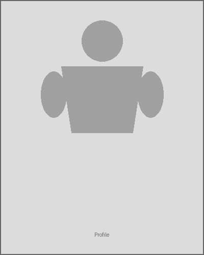

Hi, I'm a UMD Student
I'm currently pursuing my degree at the University of Minnesota Duluth. I'm passionate about learning, exploring new ideas, and making the most of my time in college.
Outside of classes, I enjoy spending time outdoors around Duluth's beautiful trails, working on creative projects, and staying involved in campus activities. I believe in continuous growth and challenging myself to try new things.
This website is part of a class project, but it also serves as a personal space where I can share my thoughts and experiences. Thanks for stopping by!
My Interests
Here are a few things I'm passionate about:
- Technology and web development
- Outdoor activities and hiking around Lake Superior
- Photography and creative writing
- Community involvement and volunteering
- Reading and lifelong learning
Fun Facts
A few things you might not know about me:
- I've visited every state park within a 100-mile radius of Duluth.
- My favorite study spot on campus is the library's top floor with the lake view.
- I'm always up for trying a new coffee shop.